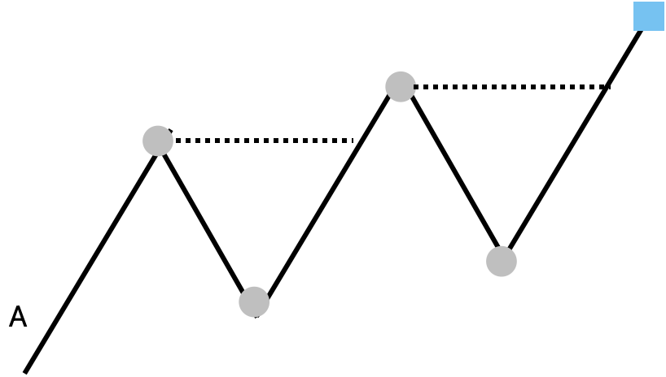
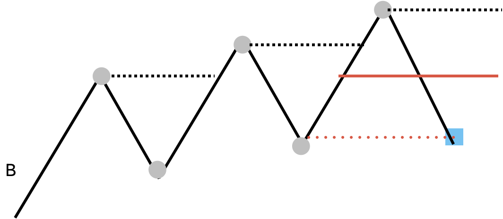
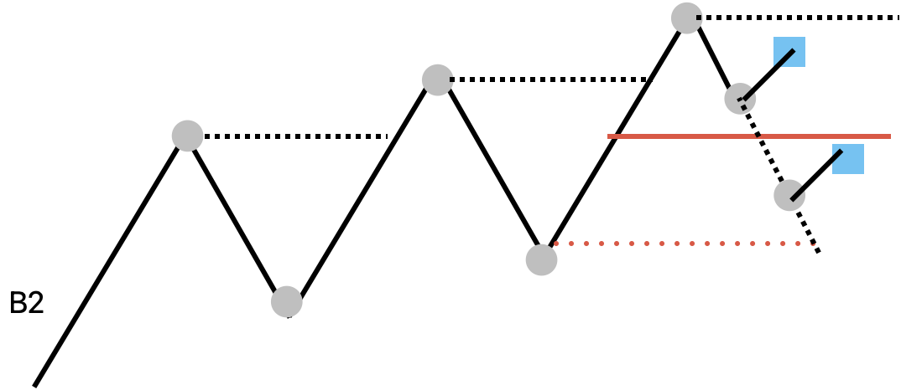
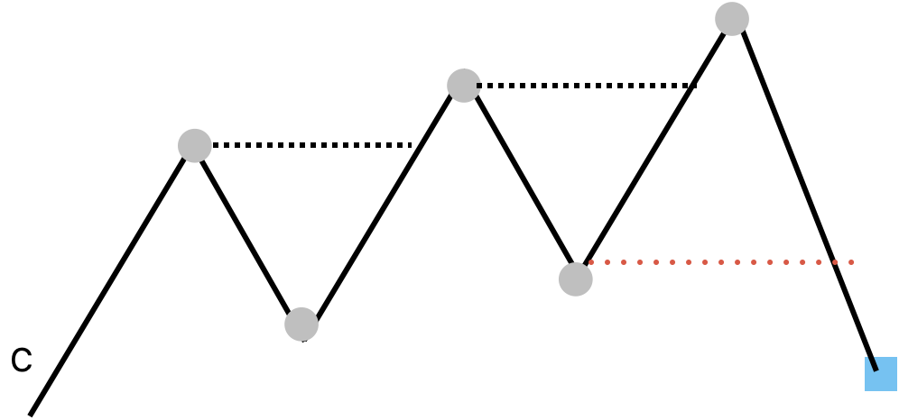
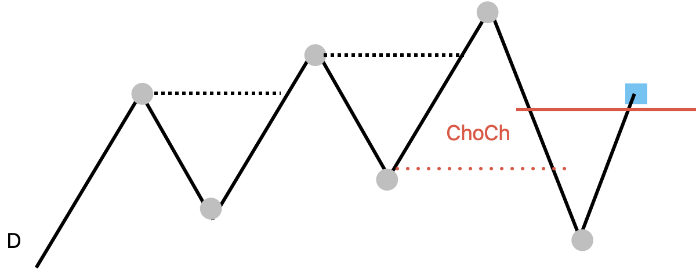
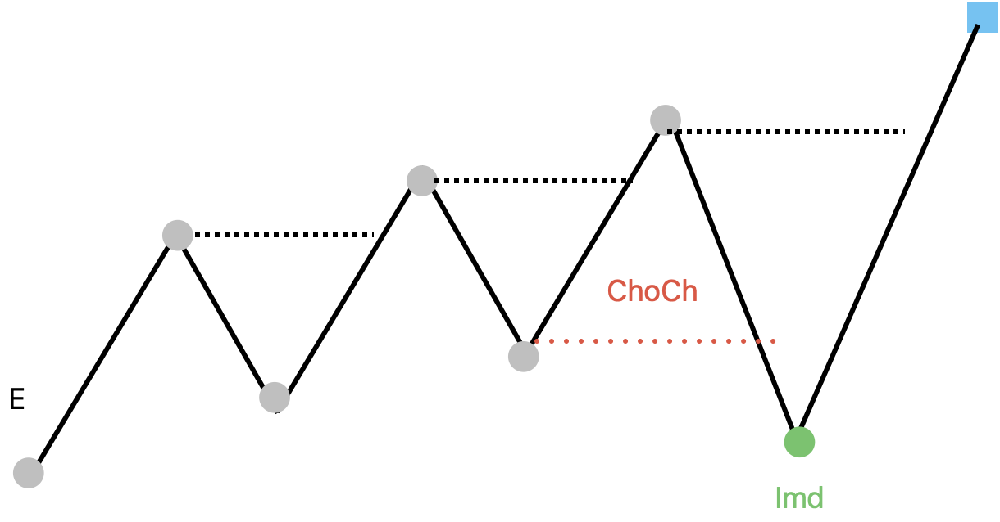
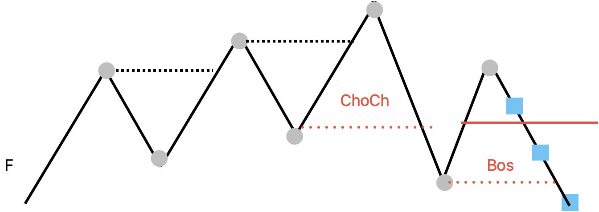
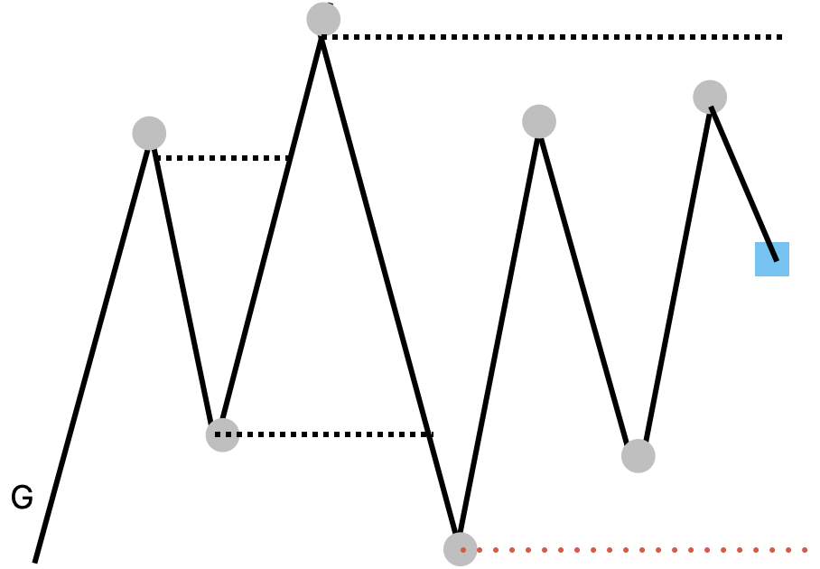
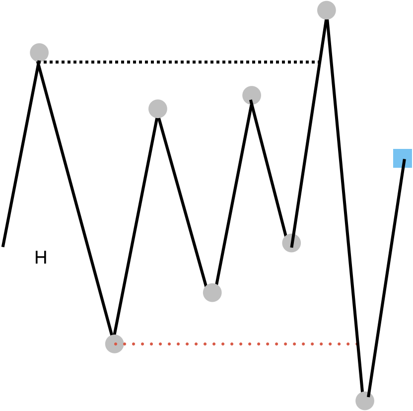

Orderflow Details - Direction, Probe, ChoCh, Messy Regimes
00 Core Concept
This note turns arbitrary discretionary orderflow examples into a practical algorithm contract. It does not try to make every live probe movement into a trend decision, but it does treat the probe as necessary for live ChoCh detection. Structure anchors describe what has already been confirmed; the probe tells whether the current market is threatening, reclaiming, or resolving that structure.
confirmed anchors determine confirmed_direction probe determines live pressure against the active structure probe opens / updates / resolves ChoCh monitor probe does not confirm a new trend by itself
The probe can move up and down many times inside the active swing, so it is dangerous as a trend label. But it is essential as a live comparator: without the current probe, the system only knows the last confirmed anchors and cannot tell whether ChoCh pressure is forming right now. Its job is to help Layer 3 detect anchor threat/reclaim state and help Layer 5 answer execution questions: is price near OTE, attacking a protected anchor, reclaiming, or leaving a range?
Step 1 · Read confirmed points direction source
Use confirmed anchors or configured ITR/LTR points to classify HH, HL, LH, and LL. These points drive confirmed_direction, quality, and regime.
Step 2 · Append live probe ChoCh + posture source
The live probe produces probe_relation, live_pressure, and ChoCh monitor transitions by comparing the current cursor price against protected_anchor_ref and range_ref. It can open a disruption watch or resolve inducement, but it cannot flip confirmed_direction by itself.
Step 3 · Brake messy ranges risk control
When the sequence compresses or sweeps both sides, Orderflow should stop assuming continuation and wait for breakaway or a new clean sequence.
01 Snapshot Contract
The detail note refines the OrderflowSnapshot so messy conditions can be represented without pretending they are clean trend states.
OrderflowSnapshot: confirmed_direction = bullish | bearish | mixed | unknown regime = directional | choch_watch | compression | sweep_range | unknown quality = clean | weak | broken live_pressure = none | pullback_extending | anchor_threat | reclaiming | breakaway_watch choch_monitor_status = none | watching_resolution | resolved_inducement | confirmed_reversal | failed source = structure_anchor_sequence | itr_sequence | ltr_sequence window_size = 6 confirmed_sequence = HH, HL, HH, HL... sequence_with_probe = HH, HL, HH, HL, probe... probe_label last_shift_at supporting_itr_refs supporting_anchor_refs protected_anchor_ref disruption_point_ref decision_point_ref range_ref probe_ref probe_breaks_protected_anchor = true | false probe_relation = above_active_high | below_active_low | upper_half | lower_half | inside_range | outside_range | unknown choch_trigger_source = probe_vs_protected_anchor | confirmed_counter_sequence | none liquidity_annotations = EH / EL cluster refs only, not direction labels pullback_status = extending | decelerating | resolving | broken | unknown timeframe evaluated_at blocked_reason = insufficient_points | stale_sequence | noisy_overlap | compression
regime is a brake, not an accelerator. compression and sweep_range should reduce confidence and block continuation assumptions.EH / EL Assignment
Orderflow does assign EH and EL, but as annotations only. They mark equal-high or equal-low liquidity clustering around confirmed anchors; they are not direction labels.
EH = current high equals previous same-side high within tolerance EL = current low equals previous same-side low within tolerance EH / EL may: attach liquidity_annotations to anchor refs lower continuation confidence push regime toward compression or sweep_range become Liquidity Context candidates EH / EL must not: count as HH / HL / LH / LL flip confirmed_direction confirm reversal trigger entry by itself
02 Directional Cases
Cases A, B1, and B2 are the ordinary bullish progression families. The probe gives current posture and early pressure, while confirmed anchors keep the directional memory stable.
Case A · bullish extension probe directional

HH1, HL1, HH2, HL2, probe above HH2
The confirmed stream is bullish. Probe above HH2 is live posture only: it may imply extension and possible correction, but it does not create the trend.
confirmed_direction = bullish regime = directional quality = clean live_pressure = pullback_extending probe_relation = above_active_high
Case B1 · probe inside HH3 / HL2 pullback posture

HH1, HL1, HH2, HL2, HH3, probe between HL2 and HH3
Bullish bias remains. Above the midpoint is less interesting for execution; below the midpoint can be a useful place to watch for HL3 formation.
confirmed_direction = bullish regime = directional quality = clean live_pressure = pullback_extending probe_relation = upper_half | lower_half pullback_status = extending | decelerating
Case B2 · confirmed HL3 protected anchor

HH1, HL1, HH2, HL2, HH3, HL3, probe between HH3 and HL3
The confirmed HL3 location matters more than the probe. A shallow HL3 may imply consolidation. A deeper discount HL3 is cleaner unless a right-shoulder LH appears.
confirmed_direction = bullish regime = directional quality = clean | weak live_pressure = none | breakaway_watch protected_anchor_ref = HL3
03 ChoCh Resolution
Cases C through F describe disruption, decisive range behavior, inducement resolution, and reversal confirmation. ChoCh is first detected as a live relation between the probe and a protected anchor. That relation opens a monitor; it does not instantly flip the orderflow.
Case C · protected anchor breaks monitor opens

HH1, HL1, HH2, HL2, HH3, probe below HL2
The confirmed stream remains weak bullish. The current probe below protected HL2 is the actual ChoCh tripwire: it creates a disruption watch, not a bearish verdict. Without the probe, the system would only know HL2 existed; it would not know the market is currently attacking it.
confirmed_direction = bullish regime = choch_watch quality = weak live_pressure = anchor_threat choch_monitor_status = watching_resolution protected_anchor_ref = HL2 disruption_point_ref = current probe / LL candidate choch_trigger_source = probe_vs_protected_anchor probe_breaks_protected_anchor = true
Case D · decisive range after ChoCh unresolved

HH1, HL1, HH2, HL2, HH3, LL1, probe between HH3 and LL1
The probe location describes posture inside HH3 / LL1. It can lean reclaiming or threatening, and it updates the ChoCh monitor while the sequence remains unresolved. The monitor resolves only when price either reclaims the original side or confirms a counter-sequence.
confirmed_direction = bullish regime = choch_watch quality = weak choch_monitor_status = watching_resolution live_pressure = reclaiming | anchor_threat range_ref = HH3 / LL1 decision_point_ref = right shoulder candidate, if present probe_relation = lower_half | upper_half choch_trigger_source = probe_vs_protected_anchor
Case E · inducement resolved bullish reclaim

HH1, HL1, HH2, HL2, HH3, LL1, probe above HH3
The ChoCh resolves back into the original bullish direction. The disruption was inducement.
confirmed_direction = bullish regime = directional quality = weak | clean choch_monitor_status = resolved_inducement live_pressure = reclaiming probe_relation = above_active_high
Case F · reversal path right shoulder LH1

HH1, HL1, HH2, HL2, HH3, LL1, LH1, probe between LH1 and LL1
LH1 is the right shoulder. The stream moves toward bearish reversal, but final confirmation still depends on breaking below LL1.
confirmed_direction = bearish regime = directional quality = weak | clean choch_monitor_status = confirmed_reversal live_pressure = none | breakaway_watch decision_point_ref = LH1 protected_anchor_ref = LH1 disruption_point_ref = LL1
04 Messy Regimes
Cases G and H are not exotic exceptions. They are the reason regime exists. The detector should have a first-class way to say: stop assuming trend.
Case G · Harami compression range brake

HH1, HL1, HH2, LL1, LH1, HL2, HH3, probe between HH3 and HL2
The sequence compresses and never escapes the HH2 / LL1 range. Stop assuming continuation. Do not open more continuation orders from Orderflow. Let the range resolve.
confirmed_direction = mixed | unknown regime = compression quality = broken live_pressure = none blocked_reason = compression range_ref = HH2 / LL1 probe_relation = inside_range
Case H · engulfing both sides sweep range

HH1, HL1, LH1, LL1, HL2, HH2, HL3, HH4, LL2, probe between HH4 and LL2
Both sides experienced ChoCh / sweep behavior. Do not call it a clean reversal. Watch the decisive range and wait for a new orderflow sequence after engulfing.
confirmed_direction = mixed | unknown regime = sweep_range quality = broken choch_monitor_status = watching_resolution live_pressure = breakaway_watch blocked_reason = noisy_overlap range_ref = HH4 / LL2 probe_relation = inside_range
05 Algorithm
The algorithm is not a case matcher. Cases A-H are examples of the same stages: classify confirmed sequence, score regime, compare the live probe against protected anchors, and update the ChoCh monitor.
# proposed: OrderflowContext.on_bar() def on_bar(self, cursor, state_store): source = self._source_for_timeframe(cursor.timeframe) confirmed_points = state_store.orderflow_points( source=source, limit=self.probe_points, ) probe = state_store.orderflow_probe(source=source) confirmed_labels = self._classify_confirmed_points(confirmed_points) confirmed_direction, quality = self._score_direction(confirmed_labels) regime, range_ref, blocked_reason = self._score_regime( confirmed_points, confirmed_labels, confirmed_direction, ) probe_relation, live_pressure = self._classify_probe( probe, confirmed_points, regime, ) monitor = self._update_choch_monitor( direction=confirmed_direction, regime=regime, points=confirmed_points, probe=probe, ) return OrderflowSnapshot(...)
# regime is a brake def score_regime(points, labels, direction): if insufficient(points): return "unknown", None, "insufficient_points" if both_sides_swept_recently(points): return "sweep_range", decisive_range(points), "noisy_overlap" if trapped_inside_prior_high_low(points): return "compression", compression_range(points), "compression" if protected_anchor_disrupted(labels, direction): return "choch_watch", disruption_range(points), None if direction in {"bullish", "bearish"}: return "directional", active_swing_range(points), None return "unknown", None, None
# probe is live structure pressure, not confirmed trend def classify_probe(probe, points, regime): if probe is None: return "unknown", "none" active_range = current_range(points, regime) relation = locate_probe(probe.price, active_range) if relation in {"above_active_high", "below_active_low"}: pressure = "breakaway_watch" elif threatens_protected_anchor(probe, points): pressure = "anchor_threat" elif reclaims_decision_range(probe, points): pressure = "reclaiming" elif relation in {"upper_half", "lower_half"}: pressure = "pullback_extending" else: pressure = "none" return relation, pressure
# ChoCh monitor is opened by probe-vs-anchor pressure def update_choch_monitor(direction, regime, points, probe): if regime == "compression": return monitor(status="none") if regime == "sweep_range": return monitor(status="watching_resolution") if direction == "bullish" and breaks_latest_hl(points, probe): return monitor( status="watching_resolution", pressure="anchor_threat", protected_anchor_ref=latest_hl(points), disruption_point_ref=probe.ref, ) if bullish_reclaim_seen(points, probe): return monitor(status="resolved_inducement", pressure="reclaiming") if bearish_ll_lh_ll_confirmed(points): return monitor(status="confirmed_reversal", pressure="none") return monitor(status="none")
06 Config
Orderflow has no committed engine config block yet. The implementation can begin by consuming existing Structure anchor retention and proposed source policy.
# ultrab/src/ultrab/replayer/config.yaml
structure:
enabled: true
tier: "itr"
anchor_sequence_limit: 8
pivot_events:
compute:
itr: true
ltr: true
# proposed future block
orderflow:
enabled: true
window_size: 6
probe_points: 8
source_policy:
lower_timeframe: structure_anchor_sequence
higher_timeframe: itr_sequence
regimes:
compression_enabled: true
sweep_range_enabled: true
blocked_reasons_enabled: true
07 Open Issues · Edge Cases · Next Milestone
Equal highs / equal lows. Settled direction: EH/EL should not become core directional labels. Treat them as liquidity annotations or cluster refs attached to the nearest confirmed anchor. They may lower continuation confidence, set regime = compression | sweep_range, or create a liquidity candidate for Liquidity Context. Direction still comes from HH/HL/LH/LL anchors plus ChoCh monitor resolution.
Local liquidity entries. Swept EH/EL plus FVG away can complement other context as a partial-fill/rejection footprint, but it is not predictive enough for standalone orderflow direction or blind chase entries.
Source policy. Keep HTF ITR for macro/B-D context, and consider adding LTF anchored swing liquidity as a separate Liquidity Context source for controlled chase. If structure anchors are too slow on LTF, try ITR; if ITR is too noisy, try LTR or stricter anchor filters.
Implementation contract. Update the main Orderflow Context note and future engine to use confirmed_direction, regime, live_pressure, range_ref, and probe_relation.